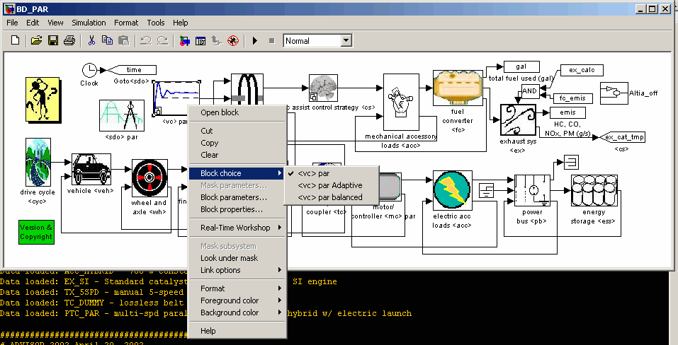
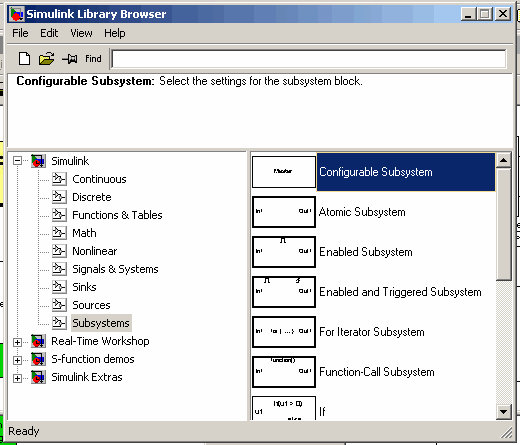
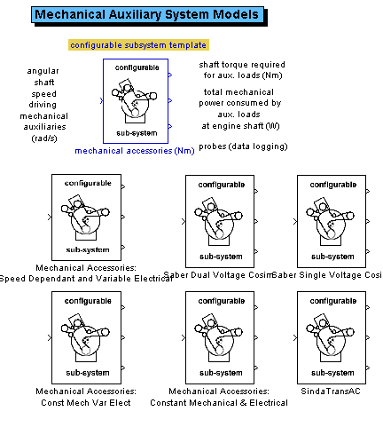

Configurable subsystems add a powerful new dimension to modeling in Simulink. The configurable subsystem allows models with the same "interface" (i.e., the same basic structure in terms of input and output ports) to be switched in and out of the model (i.e., configured) with ease. Whereas previously in ADVISOR, specific powertrain configurations were created each time a new model was added, a configurable subsystem allows the flexibility of keeping the same overall drivetrain structure with the ability to choose specific models to be used.
For example, in earlier ADVISOR implementations, the inclusion of a new ultracapacitor battery model would facilitate a separate block-diagram file for each drivetrain. Thus, the block-diagram for a parallel hybrid drivetrain using an internal resistance model would need to be modified and resaved with the new ultracapacitor model. Alternately, all models would need to be included at the same time with switches to vary which model is used.
With configurable subsystems, however, the user merely indicates which model to use and that model is "switched into" the current block diagram. Using our previous example, the user can simply select between the internal resistance energy storage model and the ultracapacitor model using a pull-down menu.
This functionality is demonstrated below. In this diagram, the BD_PAR.mdl, the user is selecting between different vehicle control models (which are ultimately contained in lib_controls.mdl). As one can see, the "electric assist control strategy <cs>" block is also configurable, as designated by the icon in the lower left-hand corner of the block icon.
| Configurable Subsystem Example This figure shows a configurable subsystem being selected directly from the Simulink block diagram of the parallel hybrid vehicle drivetrain in ADVISOR (BD_PAR.mdl in the <ADVISOR>/models directory). |
|  |
The configurable subsystem is facilitated by the Simulink configurable subsystem library block as shown below.
| Configurable Subsystem Block Configurable subsystems are created by placing the Simulink Configurable Subsystem Block into a library containing the models to be configured. |
|  |
Within a model library, the available choices for configurable subsystem models are facilitated using the Simulink configurable subsystem block. Consider the example seen in the figure below (taken from lib_accessory.mdl in <ADV>/models/library). The block with the blue outline (the configurable subsystem template) is the Simulink configurable subsystem block (with an icon added to it). The remaining six blocks all implement the same input/output port combinations and signal widths. These remaining six blocks at the bottom of the picture are configurable subsystem models. They are linked into the Simulink configurable subystem block by right clicking on the block and checking the models that apply.
| Configurable Subsystem Block Setup
The figure below is taken from lib_accessory.mdl. The block outlined in blue is the configurable subsystem template. These template blocks are the ones actually used in the driveline models (such as BD_PAR.mdl). By right clicking on the template block, the six models which we would like to link in as being configurable can be selected. In general, configurable subsystem models should implement the same basic input/output port interface (i.e., consistent with the number, signal width, and units of input ports and output ports). However, signal input and output ports can be dummy values if they are unused by a specific model. |
|  |
>>> back to table of contents <<<
So how are these configurable subsystems used within ADVISOR? First of all, the user is not expected to open the block diagrams and select which configurable subsystems they would like to use before a run. This is done automatically through an m-file called adjust_config_bds.m.
The m-file adjust_config_bds.m uses version and type and other initialization variables as a means of determining which configurable subsystem models should be used. Thus, when the user finishes setting up their vehicle and hits the run button, the drivetrain block diagram is opened (without making the window visible) and all of the appropriate configurable subsystems are chosen just as if the user had opened the block diagram and set the "block_choice" option themselves.
It is important to note that even if a user opens a simulink block diagram and changes the block choice on a configurable subsystem, this change will be usurped by adjust_config_bds.m because this file is run immediately before the block diagram is executed--thus ensuring that the required changes take place. Therefore, the user should feel free to examine the block diagrams and models in configurable subsystems and rest assured that the seetings within the GUI will be used when the GUI or m-file system (e.g., adv_no_gui.m) is used to execute advisor.
See the file adjust_config_bds.m for more information.
>>> back to table of contents <<<
Users may wish to incorporate their own models into ADVISOR's configurable subsystem interface. This is a relatively straightforward process involving the following:
That's all there is to it!
>>> back to table of contents <<<
The table below lists the currently available configurable subsystems:
| Configurable Subsystem Template Name [library] | Available Models |
|---|---|
| rolling resistance force [lib_vehicle\submodel] | force req'd to overcome rolling resistance (N) |
| force req'd to overcome rolling resistance (N) j2452 | |
| vehicle speed [lib_vehicle\submodel] | vehicle speed (m/s) |
| vehicle speed (m/s) j2452 | |
| roll res interactive [lib_interactive\Sub-model Library] | roll res force req (N) |
| roll res force req (N) j2452 | |
| config traction control [lib_controls\SubSystem] | traction control |
| traction control J2452 | |
| electrical accessories (W) [lib_accessory.mdl] | Electrical Accessories: Constant |
| Electrical Accessories: Time Variable | |
| mechanical accessories (Nm) [lib_accessory.mdl] | Mechanical Accessories: Const Mech Var Elect |
| Mechanical Accessories: Constant Mechanical & Electrical | |
| Mechanical Accessories: Speed Dependant and Variable Electrical | |
| Saber Dual Voltage Cosim | |
| Saber Single Voltage Cosim | |
| SindaTransAC | |
| Series Cosim [lib_cosimulation.mdl] | Series Saber Cosim |
| Series Simplorer Cosim | |
| Series Saber Cosim Text File Exchange | |
| ess config [lib_energy_storage\Ess Choices] | Ultracapacitor System |
| energy storage <ess> | |
| energy storage <ess> RC | |
| energy storage <ess> nnet | |
| energy storage <ess> Saber | |
| energy storage <ess> fundamental model | |
| energy storage <ess> optima fundamental model | |
| fuel use and EO emis Configurable Subsystem [lib_fuel_converter\configurabele subsystems] | fuel use and EO emis |
| fuel use and EO emis Neural Network Model | |
| par <cs> config [lib_controls.mdl] | Adaptive control strategy <cs> |
| Fuzzy Logic control strategy <cs> | |
| Fuzzy Logic control strategy with Emissions <cs> | |
| electric assist control strategy <cs> | |
| electric assist control strategy bal <cs> | |
| par <vc> config [lib_controls.mdl] | <vc> par |
| <vc> par Adaptive | |
| <vc> par balanced | |
| fuel cell config [lib_fuel_cell.mdl] | fuel converter <fc> GCTool linkage |
| fuel converter <fc> net model | |
| fuel converter <fc> polarization curve model |
>>> back to table of contents <<<
>>> back to table of contents <<<
Created: [2002-04-30] mpo
Last Modified: NA